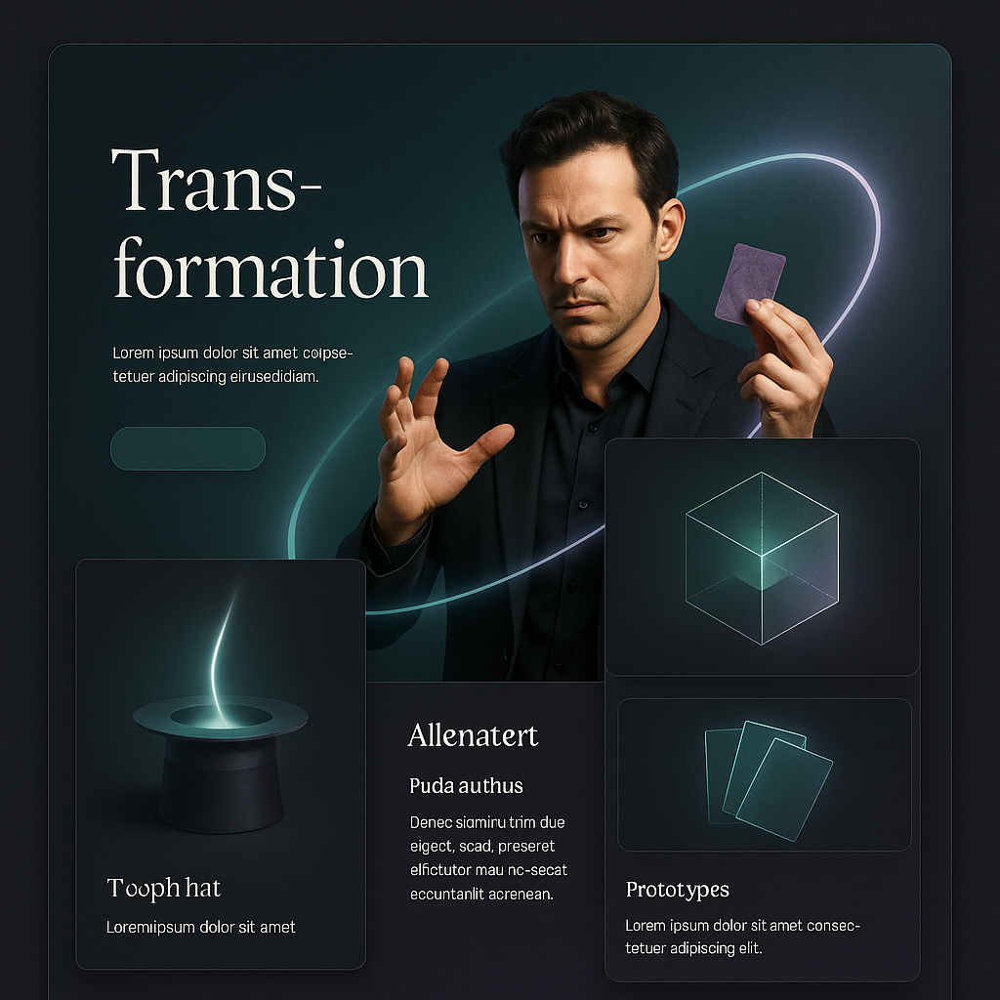

Harvest
Review the teacher examples and the existing project to extract the good ideas worth reusing.
Process page
The redesign was not just a style change. It followed the teacher's core lesson: AI gets better when direction lives in files, phases, and exit checks instead of floating inside chat history.

Review the teacher examples and the existing project to extract the good ideas worth reusing.
Write stable specs for the homepage story, supporting pages, and visual system before coding.
Break the build into bounded chunks so implementation can be checked instead of guessed at.
The old version made the tool available quickly, but it did not have a strong narrative frame. The spec-driven docs made it easier to decide what the homepage should teach, what the content pages should carry, and how the live tool should remain visible after the redesign.
Just as importantly, the docs now preserve the reasoning. A future session can reopen the repo and see the references, the specs, the phases, and the checks without reconstructing the whole plan from memory.
The site improved because the project gained a stable meaning before it gained more code.
That is the piece worth carrying into larger work. The better the context pack, the steadier the AI pairing becomes.
Context page
Revisit the narrative rationale for opening with housing pressure instead of a bare interface.
Open the context pageMethod page
Move from process into implementation details and the interaction model of the live tool section.
Open the method pageStory return
Return to the main story and use the chart, calculator, and chatbot with the new framing in mind.
Return to the story